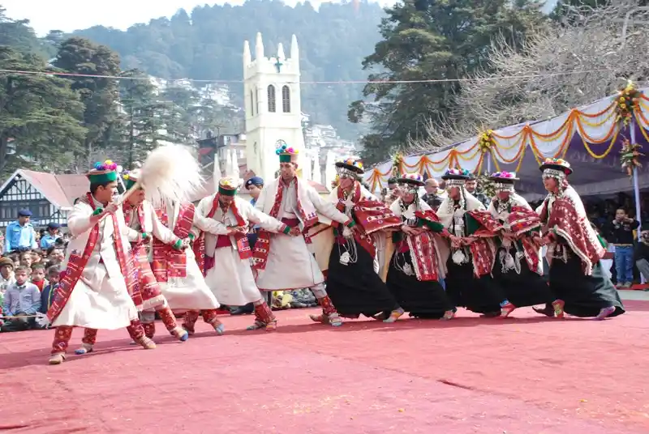
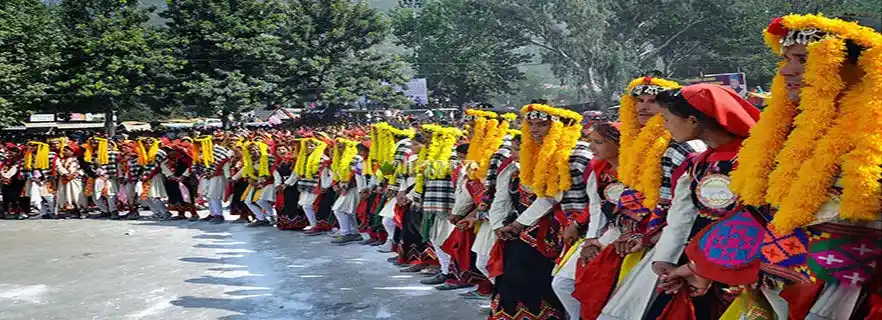
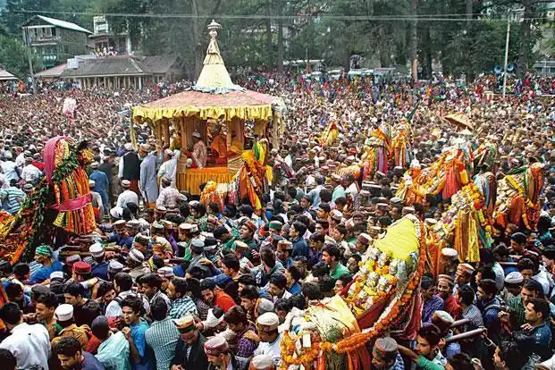
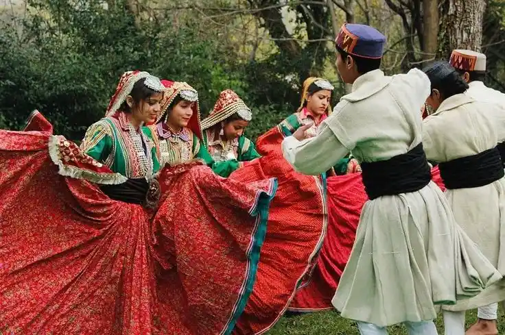
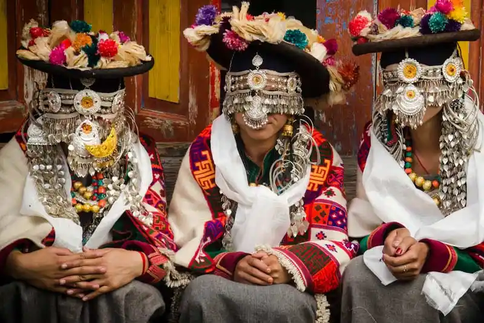
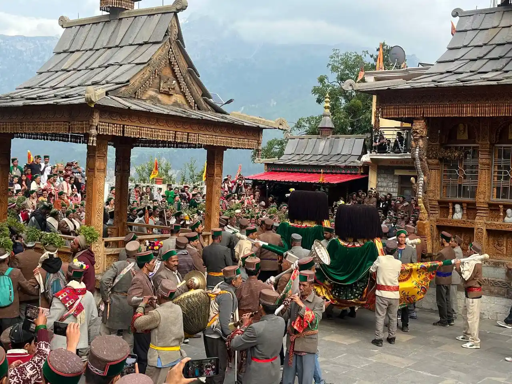

Shimla District
The culture of Shimla is deeply influenced by Pahadi traditions, British colonial heritage, and mountain lifestyle. People follow traditional customs, wear woolen clothing, and celebrate local festivals with devotion. Folk music and dance are important cultural elements. Religious faith plays a major role in daily life. Village communities follow strong social bonding. Traditional fairs like Lavi Fair and local melas are common. Hospitality and simplicity define the people of Shimla. Local temples and rituals shape cultural identity. The mix of colonial and traditional culture makes Shimla unique.

Kangra District
Kangra has one of the richest cultural histories in Himachal Pradesh. It is known for Kangra paintings, temples, and folk traditions. Spiritual life is deeply rooted in daily routine. Traditional music, dances, and village rituals are preserved. The culture is influenced by Vaishnavism and Shakti worship. Festivals like Navratri and local fairs are celebrated widely. Community living and respect for elders are strong values. Kangra culture represents ancient Himalayan civilization.

Kullu District
Kullu culture is famous for Kullu Dussehra and village deities. Each village has its own deity and traditions. Folk dances and music are part of daily life. People live in harmony with nature and rivers. Traditional dresses and handicrafts are popular. Spiritual belief systems dominate social structure. Festivals unite communities. Kullu culture is simple, spiritual, and nature-based.
.webp)
Mandi District
Mandi is called the “Varanasi of the Hills”. Its culture revolves around temples and spiritual life. Traditional rituals and fairs are important. Folk dances and religious gatherings shape social life. People follow ancient customs. Community living is strong. Festivals like Shivratri Mela define identity. Mandi culture is deeply spiritual and devotional.

Chamba District
Chamba has ancient cultural roots. Famous for handicrafts, temples, and folk traditions. Traditional dresses and jewelry are common. Fairs and festivals define social life. Strong connection with religious traditions. Community unity is strong. Chamba culture reflects ancient Himalayan civilization.

Kinnaur, Lahaul & Spiti (Tribal Culture)
These regions represent tribal Himalayan culture. Strong Buddhist influence is present. Simple lifestyle and spiritual living. Nature worship is common. Traditional festivals are unique. Village systems are community-based. Cultural identity is preserved strongly. These areas represent ancient mountain civilizations. Spiritual peace and simplicity define life.

Una, Bilaspur, Hamirpur, Solan, Sirmaur
These districts represent mixed hill and plain culture. Influenced by Punjab and Haryana traditions. Traditional Himachali culture blends with modern lifestyle. Festivals are celebrated with unity. Education and development shape culture. Village traditions are still preserved. Spiritual beliefs remain strong. Cultural harmony is the identity of these regions.